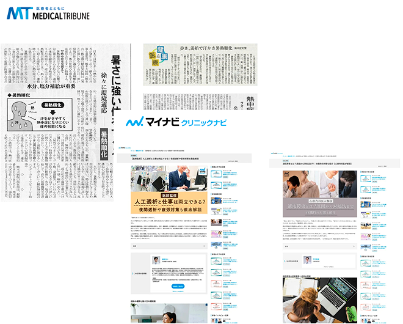
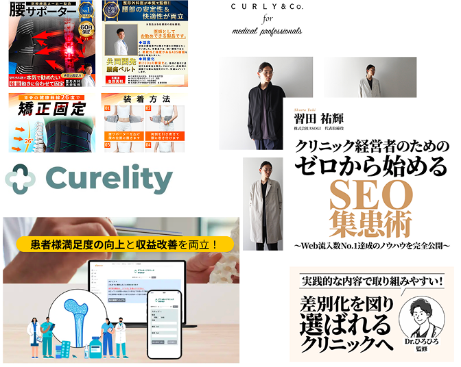
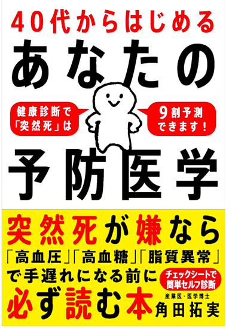

現役医師が経営する監修チーム

こんな
「お悩み」ありませんか？


その悩み、
｢ドクターチェック｣が
解決します！
-
アサインから調整まで
「丸投げ」OK
-
「監修＋拡散」で
コンペを制する
-
AI時代の
「本質的なE-A-T」対策

ドクター紹介
様々な診療科の医師が揃っています｡
専門性の高い医師による確かな監修体制をご提案｡
サービス紹介
貴社の悩みに合わせて､最適なプランをご提案｡
-

コンテンツ監修
医療情報プラットフォーム「マイナビクリニック」掲載記事や全国紙転載の暑熱順化特集を医師が専門監修。透析と就労支援、適応障害の職場配慮などを正確かつ実用的に解説し、科学的根拠に基づく情報発信で読者の信頼と健康意識向上に貢献。
-

商品開発・監修
整形外科専門医と連携し、高機能腰サポーターやメディカルウェア、骨粗鬆症診療支援アプリなどを共同開発・監修。医療現場の実用性や信頼性を重視した設計支援に加え、SEO書籍の専門監修も担当し、商品価値とブランド信頼性の向上に貢献。
-

マーケティング・PR
医師との信頼連携による書籍出版を通じて、専門性の高い情報発信を実施。現役産業医・角田拓実医師とタイアップし『40代からはじめるあなたの予防医学』を出版。原稿監修や構成支援に加え、出版後もSNS・Web・講演で継続発信を行い、企業のブランド価値と社会的信頼性の向上を実現。

｢こんな悩みは無理かも?｣という
相談こそ､大歓迎!